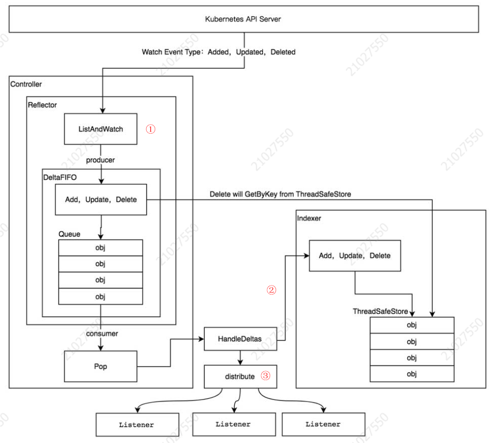
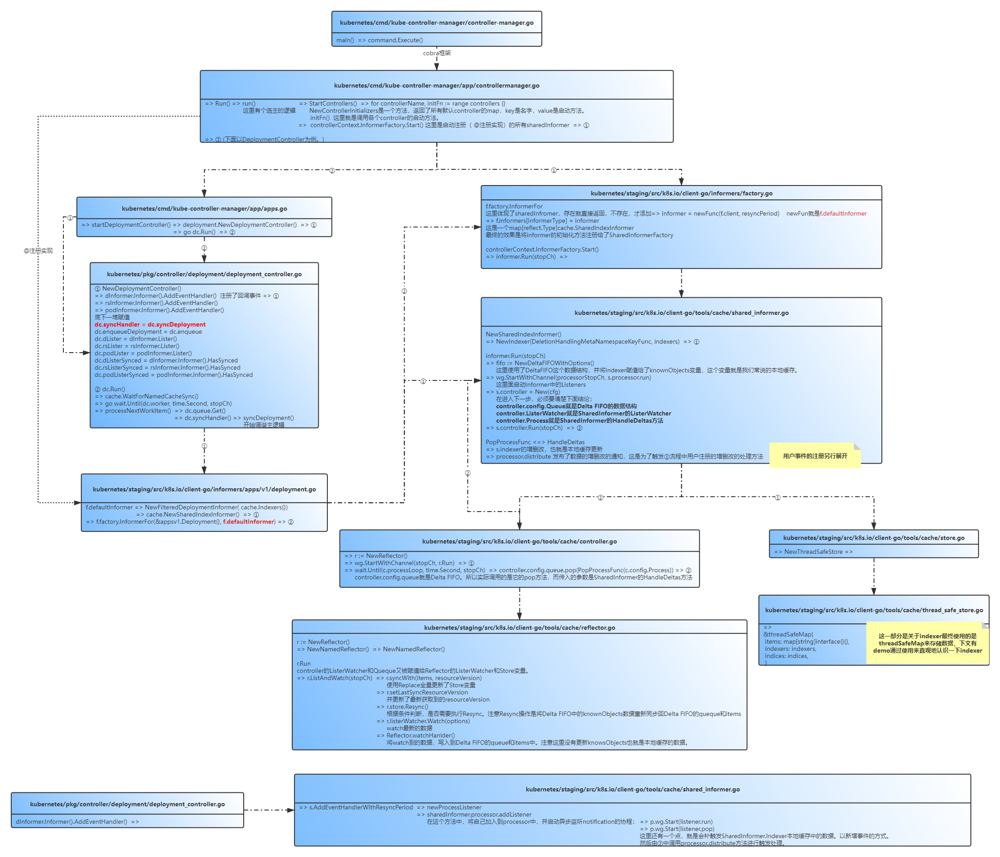

理解Kubernetes的Informer机制，对于基于Kubernetes作二次开发，编写一些符合业务场景的controller至关重要。本文通过梳理Kubernetes的controller-manager的实现，对于深入理解使用Informer给予一些启发。
组件介绍 kube-controller-manager是Kubernetes中controller模式的实现者，承载了许多工作负载的关键逻辑实现。在实际使用的集群中，kube-controller-manager以多副本选主的方式，保证高可用。通过ListWatch api-server对应资源的API。触发事件回调，执行相应的调谐逻辑保证工作负载的状态与用户期望的状态达到最终一致性。
kube-controller-manager作为Kubernetes的关键组件之一，代码相对简单，整体结构基本与自定义controller的实现并无二致。
参照《Kubernetes源码剖析》一书中的这幅图，详细展示了组件之间的关系，笔者在图上作了序号的标记，结合源码在下文中来详细解释。

其中包括多个工作组件，之前在《Kubernetes-Operator》中结合具体的场景分析过，本文将从Kubernetes源码的角度，分析官方提供的工作负载（以Deployment为例）各个组件是如何协同工作，数据是如何传递，保存的，事件是如何注册、触发的。
特别说明
本次源码分析，主要为了理清Kubernetes核心组件的整体实现思路，会着重分析一些看源码时候比较迷惑的点， 但并不会局限于全部的实现细节，也不局限于某个版本，因此代码的原本是直接使用下面命令clone的github上最新代码
git clone –depth=1 https://github.com/kubernetes/kubernetes.git。
笔者认为，也许代码的实现细节会随着版本的更迭，有所更新，但核心的实现思路并不会有太大变化，只要理清了这些核心的实现，在工作学习中，结合具体场景具体问题再做具体分析，再返回头来深究一些细节，也是会事半功倍的。
源码分析不是一蹉而就的，需要反复阅读，反复考究。温故而知新。
源码分析 Kubernetes中自带了许多controller，controller-manager负责启动这些controller，具体的调谐逻辑存放在controller中。下面是源码中controller名称和启动方法的对应map。
1 2 3 4 5 6 7 8 9 10 11 12 13 14 15 16 17 18 19 20 21 22 23 24 25 26 27 28 29 30 31 32 33 34 35 36 37 38 39 40 41 42 43 44 45 46 47 48 49 func NewControllerInitializers (loopMode ControllerLoopMode) map [string ]InitFunc { controllers := map [string ]InitFunc{} controllers["endpoint" ] = startEndpointController controllers["endpointslice" ] = startEndpointSliceController controllers["endpointslicemirroring" ] = startEndpointSliceMirroringController controllers["replicationcontroller" ] = startReplicationController controllers["podgc" ] = startPodGCController controllers["resourcequota" ] = startResourceQuotaController controllers["namespace" ] = startNamespaceController controllers["serviceaccount" ] = startServiceAccountController controllers["garbagecollector" ] = startGarbageCollectorController controllers["daemonset" ] = startDaemonSetController controllers["job" ] = startJobController controllers["deployment" ] = startDeploymentController controllers["replicaset" ] = startReplicaSetController controllers["horizontalpodautoscaling" ] = startHPAController controllers["disruption" ] = startDisruptionController controllers["statefulset" ] = startStatefulSetController controllers["cronjob" ] = startCronJobController controllers["csrsigning" ] = startCSRSigningController controllers["csrapproving" ] = startCSRApprovingController controllers["csrcleaner" ] = startCSRCleanerController controllers["ttl" ] = startTTLController controllers["bootstrapsigner" ] = startBootstrapSignerController controllers["tokencleaner" ] = startTokenCleanerController controllers["nodeipam" ] = startNodeIpamController controllers["nodelifecycle" ] = startNodeLifecycleController if loopMode == IncludeCloudLoops { controllers["service" ] = startServiceController controllers["route" ] = startRouteController controllers["cloud-node-lifecycle" ] = startCloudNodeLifecycleController } controllers["persistentvolume-binder" ] = startPersistentVolumeBinderController controllers["attachdetach" ] = startAttachDetachController controllers["persistentvolume-expander" ] = startVolumeExpandController controllers["clusterrole-aggregation" ] = startClusterRoleAggregrationController controllers["pvc-protection" ] = startPVCProtectionController controllers["pv-protection" ] = startPVProtectionController controllers["ttl-after-finished" ] = startTTLAfterFinishedController controllers["root-ca-cert-publisher" ] = startRootCACertPublisher controllers["ephemeral-volume" ] = startEphemeralVolumeController if utilfeature.DefaultFeatureGate.Enabled(genericfeatures.APIServerIdentity) && utilfeature.DefaultFeatureGate.Enabled(genericfeatures.StorageVersionAPI) { controllers["storage-version-gc" ] = startStorageVersionGCController } return controllers }
主线脉络 以DeploymentController为例，代码的主线脉络如下图：

关键代码 这部分主要就阅读过程中一些关键的部分进行分析。
从上图的主线脉络中可以看出，Controller Manager管理了许多的Controller。不用的Controller负责处理不同工作负载的调谐逻辑，但是他们所使用到的Informer具有共性，同一种资源可能被多个Controller所关注，所以源码中将Infromer的初始化，放在了Controller的实现之外，通过factory中的map数据结构进行去重，然后在Controller Manager的主逻辑中，将Informer启动起来，并且在每个Controller正式执行调谐之前，就需要等待与之关联的infromer资源的数据同步完成。从而保证与Etcd中数据的一致性。
sharedInformer的数据结构：
1 2 3 4 5 6 7 8 9 10 11 type sharedIndexInformer struct { indexer Indexer controller Controller processor *sharedProcessor cacheMutationDetector MutationDetector listerWatcher ListerWatcher ...省略... }
其中indexer是本地缓存，processor是用户事件注册、触发的实现。
关键流程 ListWatch 先来看一下Delta FIFO的数据结构
1 2 3 4 5 6 7 8 9 10 11 12 13 14 15 16 17 18 19 20 21 22 23 24 25 26 27 28 type DeltaFIFO struct { ...省略... items map [string ]Deltas queue []string populated bool initialPopulationCount int keyFunc KeyFunc knownObjects KeyListerGetter ...省略... }
其中knownObjects对应的就是indexer的数据结构。
根据上图中的数据流程，先来看一下Informer是如何将数据放入Delta FiFO中的，也即是图中序号①所标注的流程。
在2.1主线脉络中，从controllerContext.InformerFactory.Start()开始循环执行注册的SharedInformer的Run方法。 通过Reflector首先进行数据的全量同步，然后根据最新的版本号watch资源的变化，监听到数据变化的事件后，将数据放到Delta FIFO中。
在Reflector的数据处理中，还有一步Rsync的操作，主要负责将indexer中的数据重新同步会Delta FIFO中，重新触发处理事件。
Reflector的数据结构如下:
1 2 3 4 5 6 7 8 9 10 11 12 13 14 15 16 17 18 19 20 21 22 type Reflector struct { name string ...省略... store Store listerWatcher ListerWatcher resyncPeriod time.Duration ...省略... lastSyncResourceVersion string ...省略... }
其中store对应的就是Delta FIFO的数据结构。
本地缓存数据更新 图中序号②本地缓存更新，发生在controller实际从Delta FIFO中pop数据的时候，pop出来的数据首先触发SharedInformer的HandleDeltas，根据事件的类型对indexer进行同步更新，然后通过processor.distribute触发注册的用户自定义的增删改事件，对应图中序号③的方法。
用户事件注册 在往SharedInformerFactory中注册完SharedInformer后，通过AddEventHandler往SharedInformer中的processor中注册用户回调事件。同时启动对应的run和pop处理方法，负责接收notification触发对应的处理过程。而notification的正是由processor.distribute方法在处理Delta FIFO数据的时候，根据不同的事件类型产生的。
1 2 3 4 5 6 7 8 type sharedProcessor struct { listenersStarted bool listenersLock sync.RWMutex listeners []*processorListener syncingListeners []*processorListener clock clock.Clock wg wait.Group }
indexer例子 通过源码分析，知道indexer最终是由一个threadSafeMap来实现的，其数据结构如下：
1 2 3 4 5 6 7 8 9 type threadSafeMap struct { lock sync.RWMutex items map [string ]interface {} indexers Indexers indices Indices }
可以看到除了一个用于存放数据的map，还有两个属性用于协助快速的读取数据。那么这两个属性是如何工作的呢，通过一个例子是用来看一下内部的数据组成：
1 2 3 4 5 6 7 8 9 10 11 12 13 14 15 16 17 18 19 20 21 22 23 24 25 26 27 28 29 30 31 32 33 34 35 36 37 38 39 40 41 42 43 44 45 46 47 48 49 50 51 52 53 54 55 56 57 58 59 60 61 package mainimport ( "fmt" v1 "k8s.io/api/core/v1" metav1 "k8s.io/apimachinery/pkg/apis/meta/v1" "k8s.io/client-go/tools/cache" "strings" ) func UsersIndexFunc (obj interface {}) string , error ){ pod := obj.(*v1.Pod) usersString := pod.Annotations["users" ] return strings.Split(usersString, "," ), nil } func main () index := cache.NewIndexer(cache.MetaNamespaceKeyFunc, cache.Indexers{ "byUser" : UsersIndexFunc, }) pod1 := &v1.Pod{ ObjectMeta: metav1.ObjectMeta{ Name: "pod1" , Annotations: map [string ]string { "users" : "ernie,bert" , }, }, } pod2:= &v1.Pod{ ObjectMeta: metav1.ObjectMeta{ Name: "pod2" , Annotations: map [string ]string { "users" : "bert,oscar" , }, }, } pod3 := &v1.Pod{ ObjectMeta: metav1.ObjectMeta{ Name: "pod3" , Annotations: map [string ]string { "users" : "ernie,elmo" , }, }, } index.Add(pod1) index.Add(pod2) index.Add(pod3) pods, err := index.ByIndex("byUser" , "ernie" ) if err != nil { panic (err) } for _, v := range pods { fmt.Println(v.(*v1.Pod).Name) } }
通过分析上述代码，发现
1）Items是本地缓存的map[string]interface{}。
2）indexers注册的是索引器名称和对应的方法（方法parse对象返回查询时候使用的键值列表）。
3）indices是根据注册的索引器，重新组织缓存数据：
第一层使用索引器名称，第二层使用用查询的键值作为key，缓存的数据组装成slice作为value。